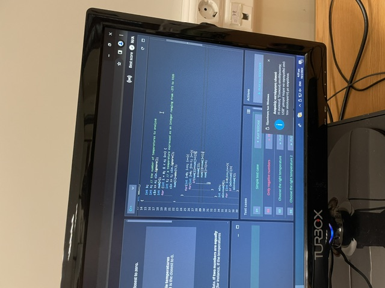

6 χρόνια γεμάτα δράση χάρη στη βοήθειά σας!


Όταν ξεκινήσαμε στην αρχή μας φαινόταν αδύνατο ότι θα μπορούμε να ανταπεξέλθουμε όμως μας βοηθήσατε και βήμα βήμα χτίσαμε όχι μόνο γνώσεις στον τομέα που μας αρέσει αλλά και πολυτιμες εμπειρίες που δε θα ξεχάσουμε!!
Πανελλήνιος Διαγωνισμός Πληροφορικής
Από την αρχή έως και πέρσυ, μας βοηθήσατε να μάθουμε c++ από το μηδέν και να καταλάβουμε την λογική για την
επίλυση προβλημάτων (ακόμα και με χαρτιά 😭) κάτι το οποίο σήμερα μας έκανε να μπορούμε
να λύσουμε περίπλοκα προβλήματα και να περνάμε τις φάσεις.
Υστερόγραφο: ευχαριστούμε για την υπομονή σας και που όταν ερχόσασταν μαγικά ο κώδικας λειτουργούσε 😭😭
Racecar
Ήταν η πρώτη μας εμπειρία με Python που χάρη σε εσάς καταλάβαμε την
πρόκληση και καταφέραμε να κάνουμε το καλύτερο δυνατό που μπορούμε. Παρόλο
που δεν τα καταφέραμε, οι εμπειρίες και οι γνώσεις που αποκτήσαμε είναι ανεκτίμητες
και για μας είναι σαν να κερδίσαμε!
Υστερόγραφο: το δαιμονισμένο ρομπότ δεν λειτουργούσε όσο και να προσπαθούσαμε 😭😭
Astro PI
LSACS ακόμα και έξω από τη Γη! Ήταν μια από τις μεγαλύτερες επιτυχίες της ομάδας μας
και ευχαριστούμε που μας βοηθήσατε να τα καταφέρουμε!
Υστερόγραφο: Τα φυλλάδια που μας εκτυπώσατε ακόμα πιάνουν χώρο στη
βιβλιοθήκη μας..! 😭😭
CAN SAT
Δεύτερη προσπάθεια να πάμε στο διάστημα 😭. Ευχαριστούμε που μας δώσατε άμμεση εμπειρία
με το arduino και γενικότερα με το hardware. Επίσης ευχαριστούμε που πιστέψατε σε εμάς τόσο
ώστε να αγοράσετε εξοπλισμό χωρίς να έχουμε χορηγούς. Ήταν πραγματικά μια από τις καλύτερες
εμπειρίες σε όλα τα χρόνια μαζί σας!
Υστερόγραφο: Ευτυχώς που δεν πήραμε φωτιά! 😭😭
ΠΜΔΚ
Πρώτη φορά σε διαγωνισμό κυβερνοασφάλειας και ως ομάδα με λίγη (καθόλου😭) εμεπειρία
τα πήγαμε αρκετά καλά, χάρη στη στήριξή σας! Ευχαριστούμε που μας δείξατε νέα εργαλεία
(τρόπους να hackaroume όσους δεν συμπαθούμε 😭).
Υστερόγραφο: Δεν βγήκαμε τελευταίοι!!!!!! 😭😭